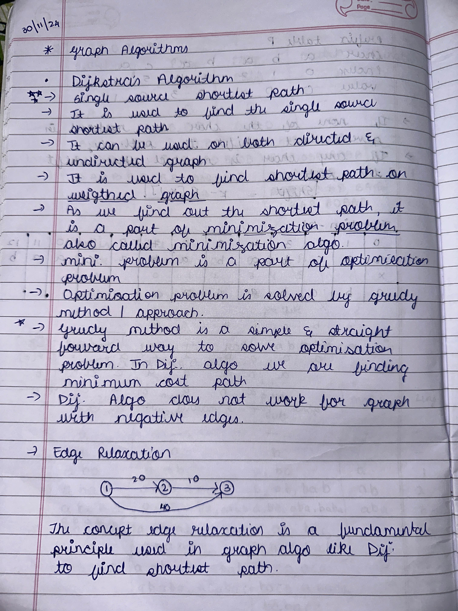
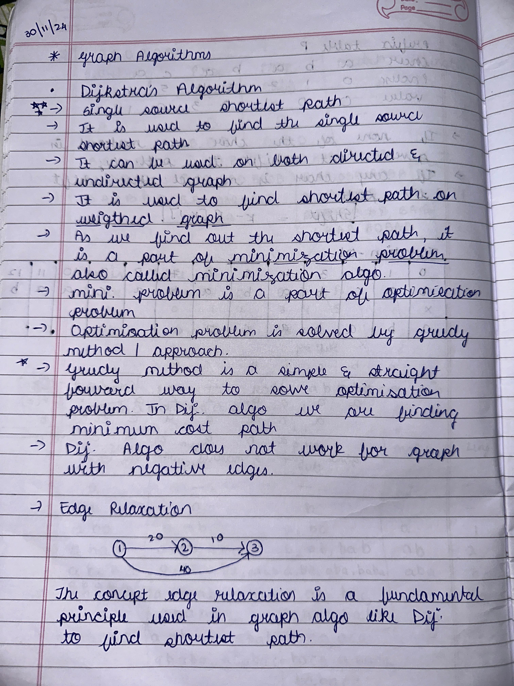

Learnings from the Course
1. Problems in Nature: Iteration, Recursion, Backtracking Nature-inspired problems often mimic computational challenges. Iteration is used to repeat steps in loops, such as calculating Fibonacci numbers. Recursion solves problems like the Tower of Hanoi by breaking them into smaller subproblems. Backtracking is useful for decision-making tasks like solving mazes or generating permutations, where trial-and-error plays a role in finding the best solution.
2. Space and Time Efficiency Efficiency is about optimizing time complexity (execution speed) and space complexity (memory usage). These concepts are essential for scalable solutions in real-world applications. For example, a problem with O(n) complexity is more efficient than O(n²) for larger inputs. Orders of growth, such as constant, logarithmic, and polynomial, guide us in evaluating algorithms' performance and selecting suitable solutions. 3. Design Principles from Chapter 2 The major takeaway from design principles is how structured techniques like Divide and Conquer, Greedy Algorithms, and Dynamic Programming simplify problem-solving. For instance, Divide and Conquer is effective in Merge Sort, while Greedy Algorithms excel in Prim’s Algorithm. Understanding these principles aids in selecting the right strategy for diverse problems. 4. Hierarchical Data and Tree Structures Hierarchical data is best represented using tree structures like Binary Trees, AVL Trees, and Tries. These structures optimize searching, sorting, and prefix operations. For example, Tries are highly efficient in dictionary word lookups, and Red-Black Trees maintain balance, ensuring faster insertion and deletion. 5. Array Query Algorithms Array query algorithms like Segment Trees and Fenwick Trees solve problems involving range sums or updates efficiently. These algorithms are crucial in applications like game development (e.g., health bars) or financial analysis, where repetitive operations on subarrays are needed in minimal time. 6. Trees vs. Graphs Trees are a subset of graphs with no cycles, often used in hierarchical data like file systems. Graphs, being more general, represent networks like social connections or transport systems. Traversal techniques like DFS and BFS differ in their approach and application, with BFS used for shortest paths and DFS for exploring all nodes. 7. Sorting and Searching Algorithms Sorting algorithms like Merge Sort and Quick Sort are vital in arranging data for faster processing. Searching algorithms, such as Binary Search, efficiently locate elements in sorted data. Real-world applications include database indexing and e-commerce, where quick responses are necessary for user satisfaction. 8. Graph Algorithms: Spanning Trees and Shortest Paths Spanning Tree algorithms like Kruskal’s and Prim’s connect all graph nodes with minimal cost, applied in network design. Shortest Path algorithms, such as Dijkstra’s, help in route optimization, widely used in navigation systems like Google Maps to find the quickest paths. 9. Algorithm Design Techniques Studied techniques like Brute Force, Greedy, and Dynamic Programming cater to different problem scenarios. For example, Dynamic Programming is effective for problems with overlapping subproblems, like the Knapsack Problem, while Greedy fits scenarios like finding the minimum coin change.

 

REFLECTIONS
Efficient Approaches
I determine efficiency by analyzing time and space complexity, prioritizing algorithms with better scalability for larger inputs.
Conflicting Constraints
When balancing constraints, I weigh trade-offs and prioritize the most critical requirement, using iterative testing to refine the solution.
Evaluating Solutions
Effectiveness is assessed by how well the solution meets the problem requirements while maintaining efficiency and scalability.
Adapting Solutions
I modify existing solutions by understanding their principles and adjusting parameters to align with the new challenge.
Pattern Identification
Strategies include analyzing data distributions, using visualizations, and finding recurring subproblems.
Simplicity vs. Optimization
Simplicity is prioritized during prototyping, while optimization is applied in performance-critical stages.